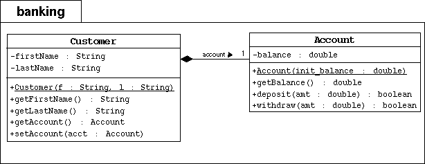

SL275: Module4: Expressions and Flow Control
Exercise #2: Conditionalize the withdraw Method
(level 2)
Objective
In this exercise you will modify the withdraw method to return
a boolean value to specify if the transaction was successful.

Directions
Start by changing your working directory to SL275/mod04/exercise2 on your computer.
- Create the banking directory. Copy the previous Banking project
files in this package directory.
- Modify the Account class to conditionalize the withdraw
and deposit methods.
- Modify the deposit method to return true.
(meaning all deposits are successful)
- Modify the withdraw method to check that the amount
being withdrawn is not greater than the current balance.
If amt is less than balance, then subtract
the amount from the balance and return true; else,
leave the balance alone and return false.
- In the main exercise3 directory, compile and run the TestBanking program.
You shoud see the following output:
Creating the customer Jane Smith.
Creating her account with a 500.00 balance.
Withdraw 150.00: true
Deposit 22.50: true
Withdraw 47.62: true
Withdraw 400.00: false
Customer [Smith, Jane] has a balance of 324.88